Candidate List 20260603 Previous Day Next Day Section 1: New Sources (age<1d) Cosmological Afterglow
Section 2: Old (1-5d) sources observed last night placeholder
Section 1: New Afterglow/FBOT Cands Last Night (5)
1. ZTF26aazjnrk (FBOT?) [Back to Top] [Share] [Trigger Swift] [Fritz ] [Lasair ]RA, Dec: 209.38824, 23.46099 13h57m33.18s, 23d27m39.55sGalactic (l, b): 22.79149, 74.62597 ext(g-r) = 0.021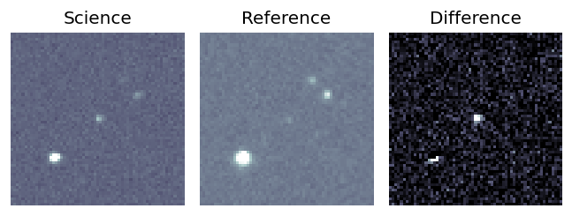
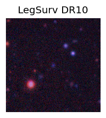
peak abs mag = -21.79 LegacySurvey: 1 sources in 3 arcsec Closest: d = 0.40 arcsec, 204.7 deg (east of north) photoz=0.1 (68% bounds 0.05, 0.73), type=EXP peak abs mag = -18.43 (68% bounds -17.03, -23.37) 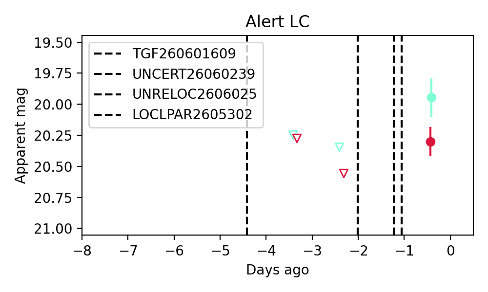
2. ZTF26aazklnv (Afterglow?) [Back to Top] [Share] [Trigger Swift] [Fritz ] [Lasair ]RA, Dec: 197.86902, -14.6544 13h11m28.57s, -14d-39m-15.85sGalactic (l, b): 310.17603, 47.9353 ext(g-r) = 0.078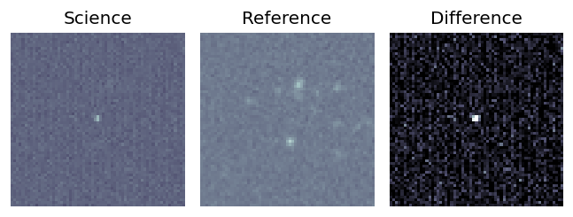
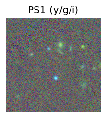
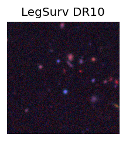
LegacySurvey: 1 sources in 3 arcsec Closest: d = 4.17 arcsec, 349.0 deg (east of north) photoz=0.74 (68% bounds 0.64, 0.88), type=EXP peak abs mag = -24.99 (68% bounds -24.62, -25.45) 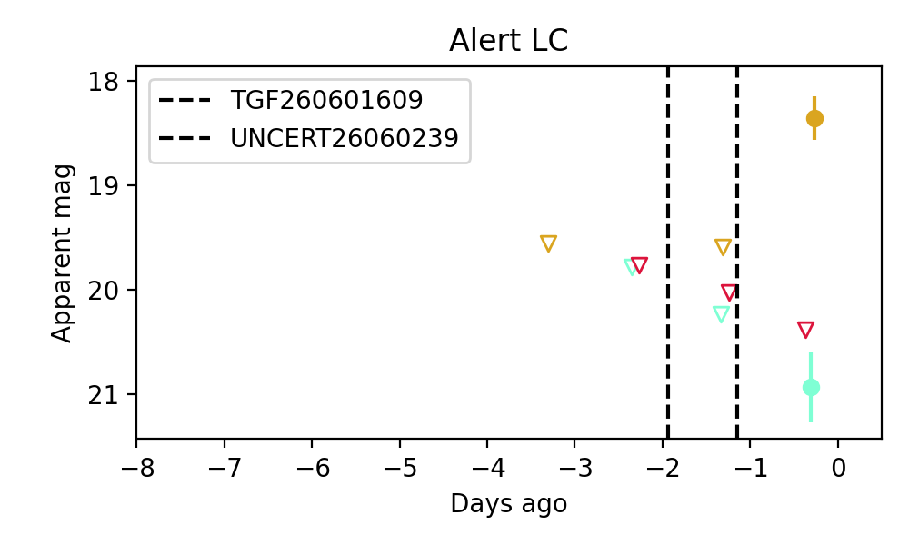
Consistent with synchrotron, g-r>0!
3. ZTF26aazknmk (FBOT?) [Back to Top] [Share] [Trigger Swift] [Fritz ] [Lasair ]RA, Dec: 229.41527, -24.91875 15h17m39.66s, -24d-55m-7.51sGalactic (l, b): 340.30586, 27.14429 ext(g-r) = 0.171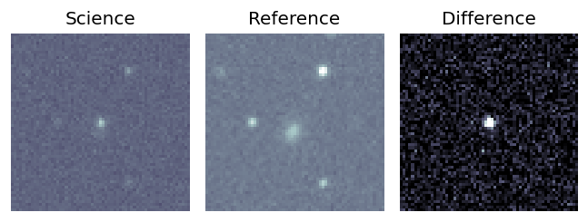
LegacySurvey: 1 sources in 3 arcsec Closest: d = 1.16 arcsec, 71.1 deg (east of north) photoz=0.84 (68% bounds 0.4, 1.28), type=PSF peak abs mag = -25.62 (68% bounds -23.69, -26.75) 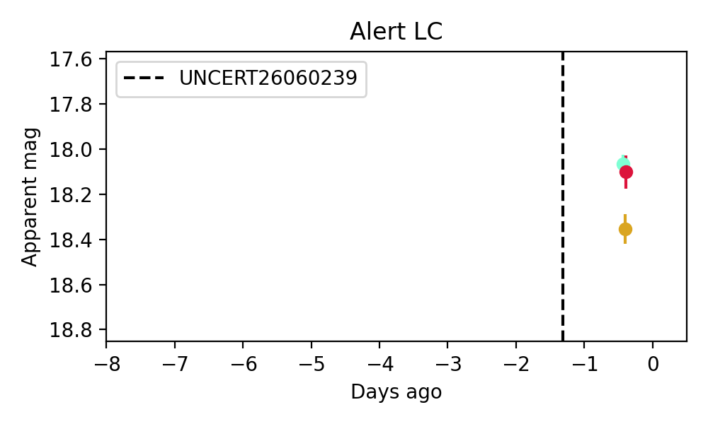
4. ZTF26aazlobi (Afterglow?) [Back to Top] [Share] [Trigger Swift] [Fritz ] [Lasair ]RA, Dec: 235.53166, 12.27467 15h42m7.60s, 12d16m28.82sGalactic (l, b): 21.13013, 47.42063 ext(g-r) = 0.041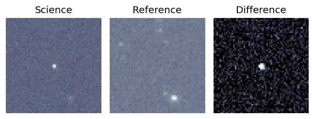
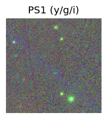
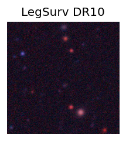
LegacySurvey: 1 sources in 3 arcsec Closest: d = 4.97 arcsec, 189.8 deg (east of north) photoz=0.58 (68% bounds 0.46, 0.68), type=REX peak abs mag = -24.3 (68% bounds -23.67, -24.72) 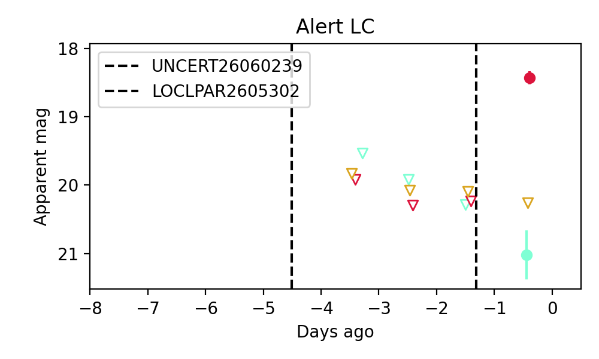
Consistent with synchrotron, g-r>0!
5. ZTF26aazlvpg (Afterglow?FBOT?) [Back to Top] [Share] [Trigger Swift] [Fritz ] [Lasair ]RA, Dec: 258.49488, 69.80473 17h13m58.77s, 69d48m17.05sGalactic (l, b): 100.72505, 33.69011 ext(g-r) = 0.04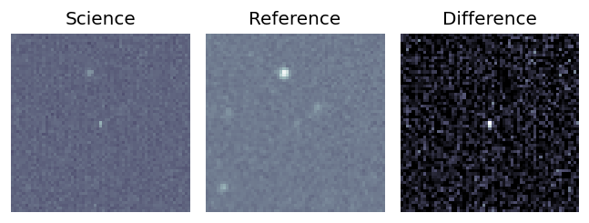
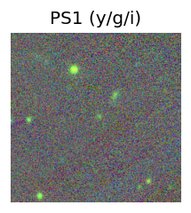
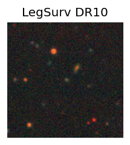
peak abs mag = -22.71 PS1: 1 source in 3 arcsec Closest: d = 9.96 arcsec photoz=0.59+/-0.16 peak abs mag = -23.66 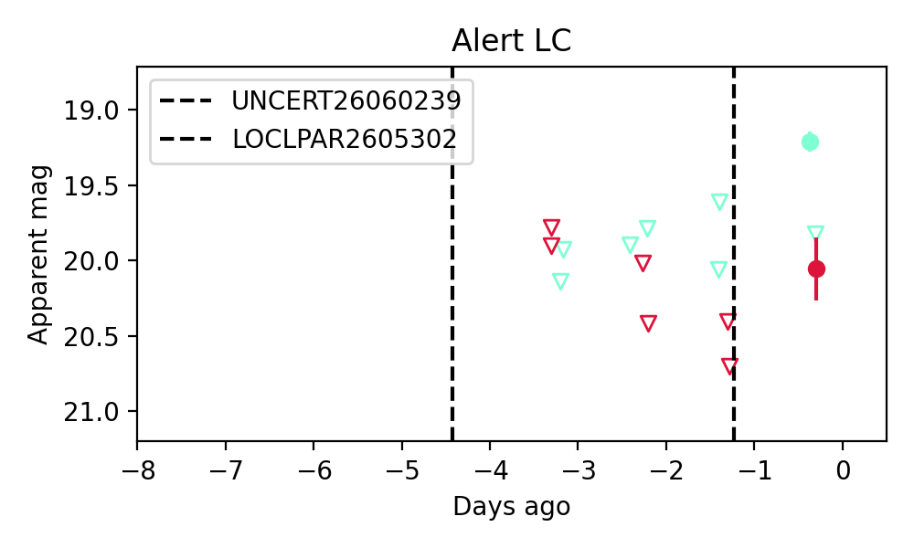
Section 2: Older Sources Observed Last Night (20)
0. ZTF26aayysdx (Afterglow?) [Back to Top] [Share] [Trigger Swift] [Fritz ] [Lasair ]RA, Dec: 263.3541, 37.01048 17h33m24.98s, 37d 0m37.72sGalactic (l, b): 61.75312, 30.78224 ext(g-r) = 0.041PS1: 1 source in 3 arcsec Closest: d = 8.88 arcsec photoz=0.88+/-0.25 peak abs mag = -27.50
1. ZTF26aayznam (Afterglow?FBOT?) [Back to Top] [Share] [Trigger Swift] [Fritz ] [Lasair ]RA, Dec: 16.95595, 41.99539 1h 7m49.43s, 41d59m43.41sGalactic (l, b): 126.18706, -20.77277 ext(g-r) = 0.103peak abs mag = -17.47 peak abs mag = -21.65 PS1: 1 source in 3 arcsec Closest: d = 2.02 arcsec photoz=0.02+/-0.00 peak abs mag = -20.71
2. ZTF26aazblss (Afterglow?FBOT?) [Back to Top] [Share] [Trigger Swift] [Fritz ] [Lasair ]RA, Dec: 216.43671, 3.89569 14h25m44.81s, 3d53m44.49sGalactic (l, b): 351.15699, 57.64926 ext(g-r) = 0.031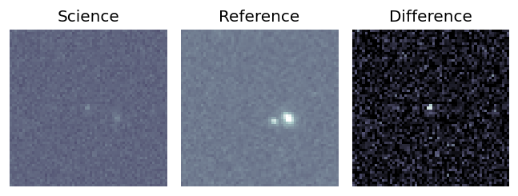
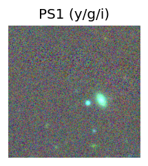
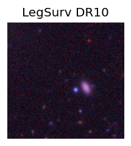
LegacySurvey: 1 sources in 3 arcsec Closest: d = 0.61 arcsec, 265.0 deg (east of north) photoz=0.77 (68% bounds 0.36, 1.41), type=REX peak abs mag = -24.26 (68% bounds -22.29, -25.89) 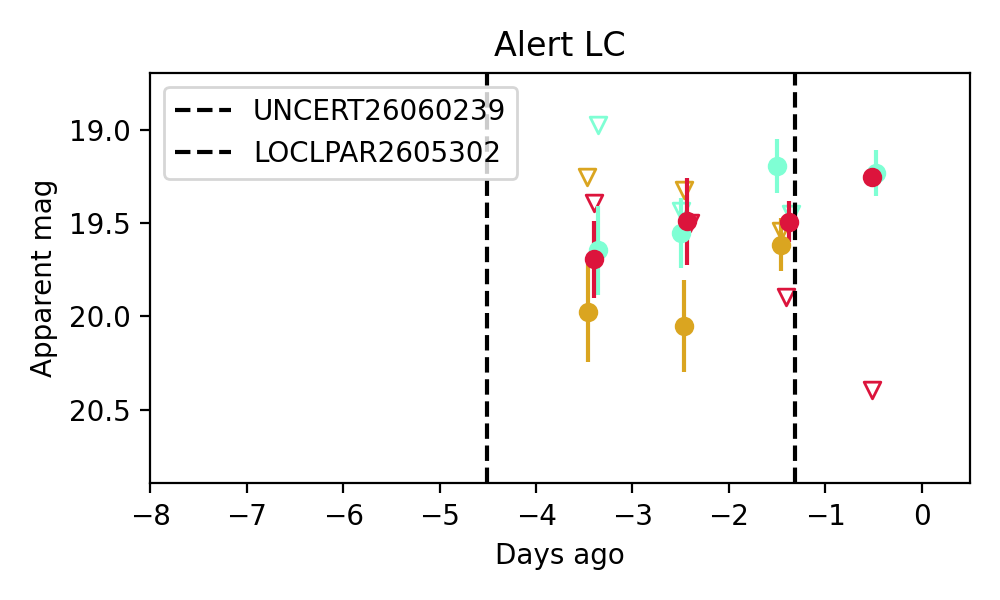
Consistent with synchrotron, g-r>0!
3. ZTF26aazcwph (Afterglow?) [Back to Top] [Share] [Trigger Swift] [Fritz ] [Lasair ]RA, Dec: 245.01606, -3.2654 16h20m3.85s, -3d-15m-55.43sGalactic (l, b): 10.22012, 31.27544 ext(g-r) = 0.249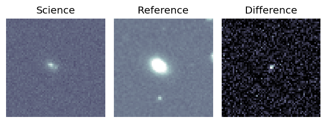
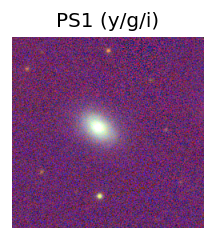
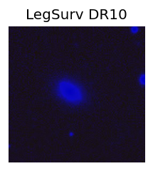
peak abs mag = -19.19 peak abs mag = -18.71 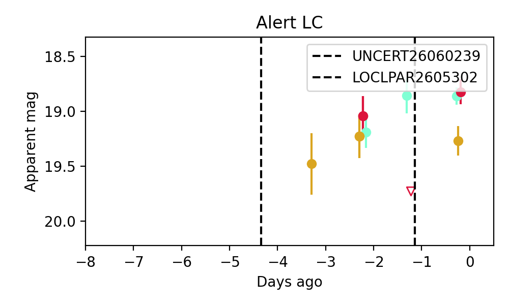
4. ZTF26aazdfhw (FBOT?) [Back to Top] [Share] [Trigger Swift] [Fritz ] [Lasair ]RA, Dec: 314.61419, 0.34084 20h58m27.41s, 0d20m27.02sGalactic (l, b): 49.02211, -27.7533 ext(g-r) = 0.086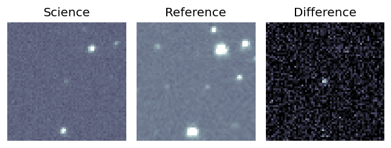
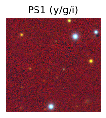
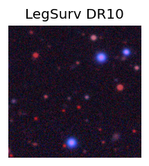
LegacySurvey: 1 sources in 3 arcsec Closest: d = 0.70 arcsec, 196.1 deg (east of north) photoz=1.02 (68% bounds 0.69, 1.24), type=PSF peak abs mag = -25.0 (68% bounds -23.96, -25.5) 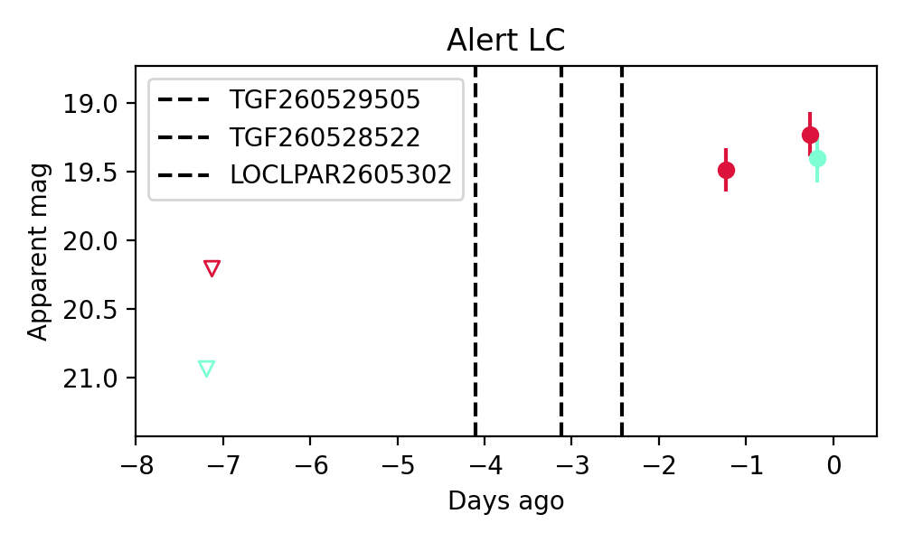
Consistent with synchrotron, g-r>0!
5. ZTF26aazenig (Afterglow?FBOT?) [Back to Top] [Share] [Trigger Swift] [Fritz ] [Lasair ]RA, Dec: 189.80294, 26.37948 12h39m12.70s, 26d22m46.14sGalactic (l, b): 227.58141, 87.16991 ext(g-r) = 0.017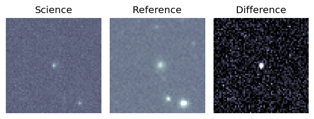
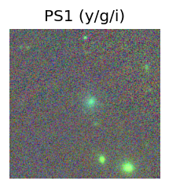
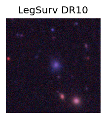
peak abs mag = -19.68 LegacySurvey: 1 sources in 3 arcsec Closest: d = 1.70 arcsec, 39.9 deg (east of north) photoz=1.03 (68% bounds 0.59, 1.28), type=REX peak abs mag = -25.42 (68% bounds -23.96, -26.02) 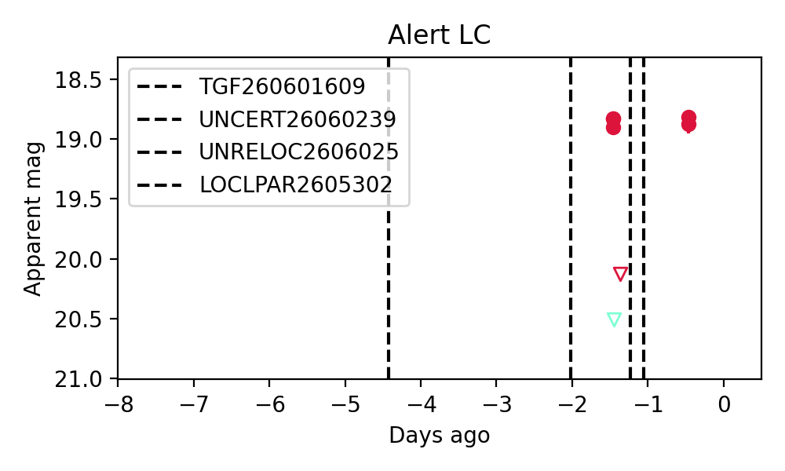
6. ZTF26aazhujg (FBOT?) [Back to Top] [Share] [Trigger Swift] [Fritz ] [Lasair ]RA, Dec: 3.09293, 51.92725 0h12m22.30s, 51d55m38.10sGalactic (l, b): 116.82515, -10.48068 ext(g-r) = 0.203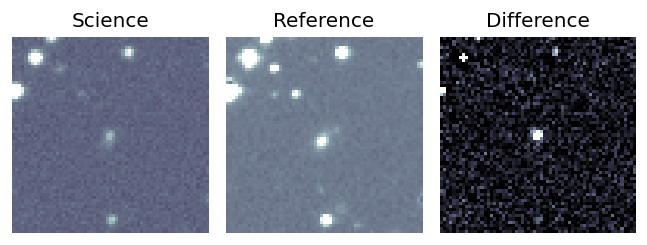
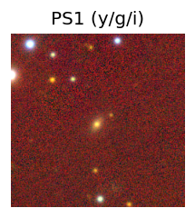
PS1: 1 source in 3 arcsec Closest: d = 2.05 arcsec photoz=0.30+/-0.09 peak abs mag = -22.39 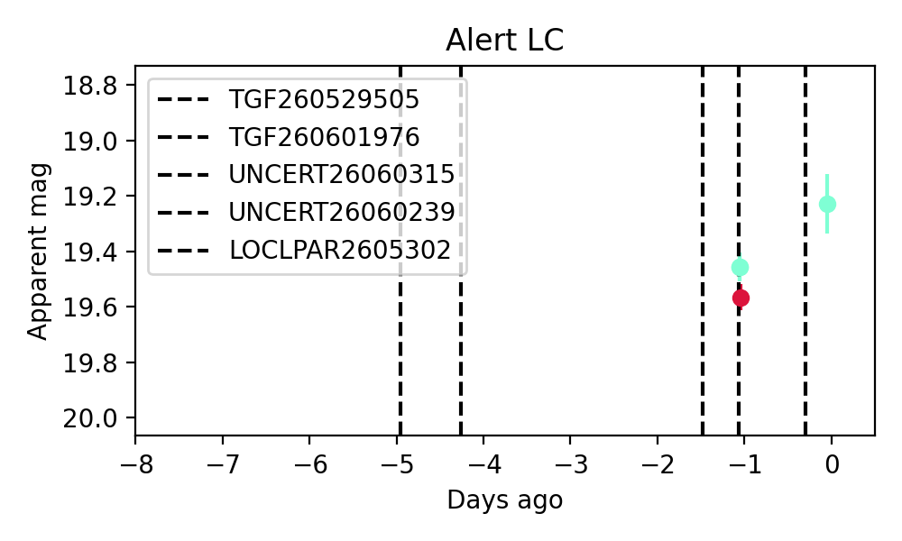
7. ZTF26aazhvxe (Afterglow?) [Back to Top] [Share] [Trigger Swift] [Fritz ] [Lasair ]RA, Dec: 20.82478, 39.43953 1h23m17.95s, 39d26m22.30sGalactic (l, b): 129.60927, -23.01877 ext(g-r) = 0.062peak abs mag = -20.10 PS1: 1 source in 3 arcsec Closest: d = 0.39 arcsec photoz=0.17+/-0.02 peak abs mag = -19.77 Consistent with synchrotron, g-r>0!
8. ZTF26aazhvzx (Afterglow?FBOT?) [Back to Top] [Share] [Trigger Swift] [Fritz ] [Lasair ]RA, Dec: 19.13346, 44.03066 1h16m32.03s, 44d 1m50.39sGalactic (l, b): 127.68751, -18.60923 ext(g-r) = 0.063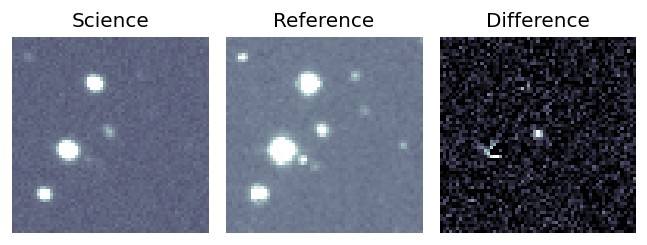
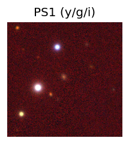
peak abs mag = -19.64 PS1: 1 source in 3 arcsec Closest: d = 1.40 arcsec photoz=0.19+/-0.06 peak abs mag = -20.04 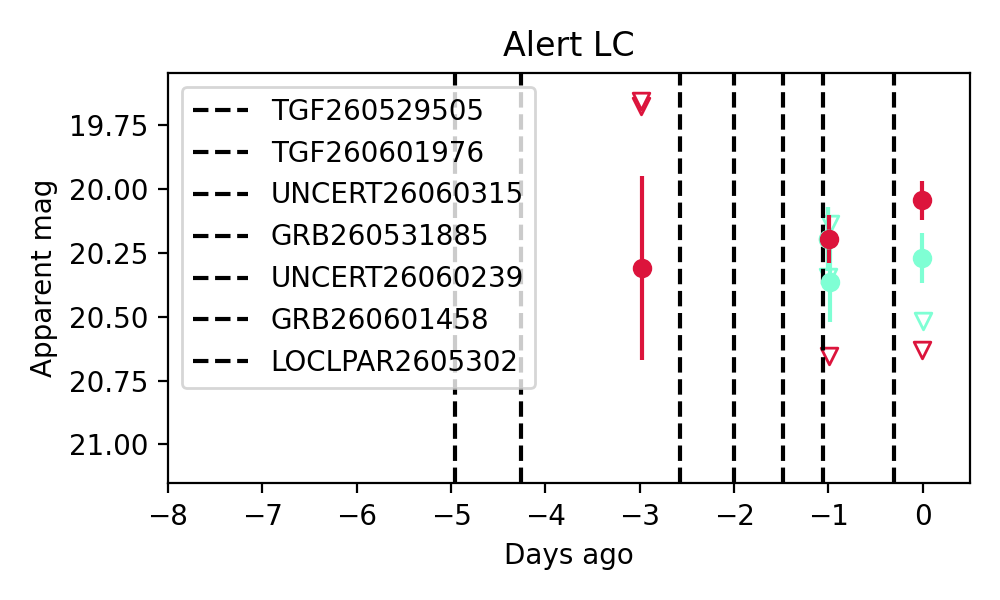
Consistent with synchrotron, g-r>0!
9. ZTF26aazhxpo (Afterglow?) [Back to Top] [Share] [Trigger Swift] [Fritz ] [Lasair ]RA, Dec: 17.20274, 37.70865 1h 8m48.66s, 37d42m31.14sGalactic (l, b): 126.72345, -25.03517 ext(g-r) = 0.075 Consistent with synchrotron, g-r>0!
10. ZTF26aazhxtc (FBOT?) [Back to Top] [Share] [Trigger Swift] [Fritz ] [Lasair ]RA, Dec: 3.77529, 10.70162 0h15m6.07s, 10d42m5.85sGalactic (l, b): 108.61077, -51.15693 ext(g-r) = 0.124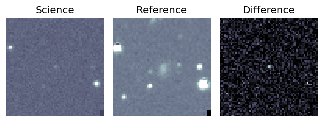
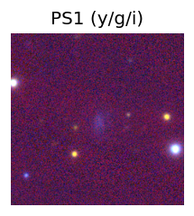
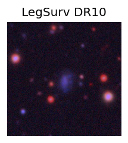
peak abs mag = -17.88 LegacySurvey: 1 sources in 3 arcsec Closest: d = 0.32 arcsec, 337.1 deg (east of north) photoz=0.99 (68% bounds 0.51, 1.49), type=PSF peak abs mag = -25.21 (68% bounds -23.44, -26.31) 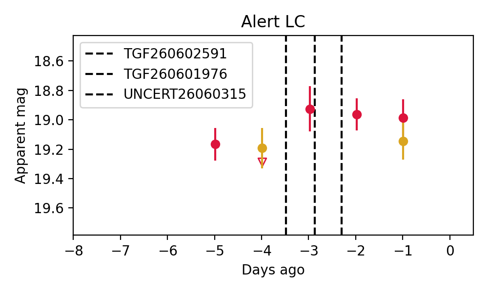
11. ZTF26aazjrnm (Afterglow?) [Back to Top] [Share] [Trigger Swift] [Fritz ] [Lasair ]RA, Dec: 187.34473, 4.54656 12h29m22.74s, 4d32m47.63sGalactic (l, b): 288.84973, 66.81328 ext(g-r) = 0.018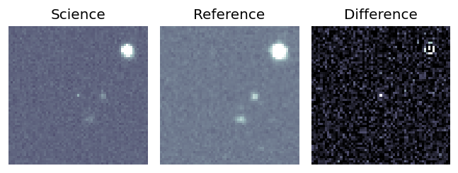
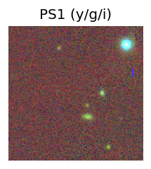
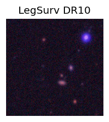
LegacySurvey: 1 sources in 3 arcsec Closest: d = 7.73 arcsec, 219.7 deg (east of north) photoz=0.48 (68% bounds 0.42, 0.52), type=REX peak abs mag = -21.6 (68% bounds -21.25, -21.83) 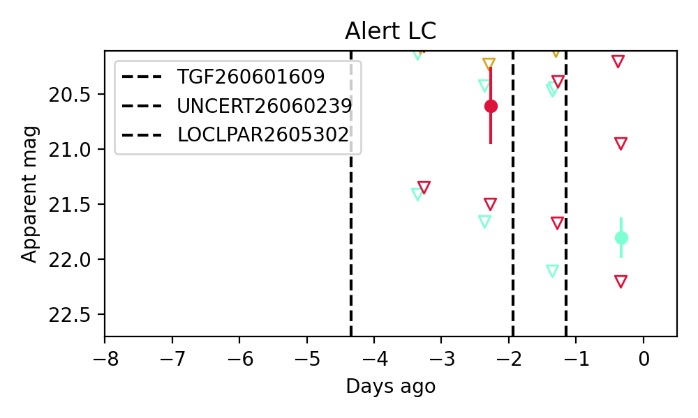
12. ZTF26aazjyhl (Afterglow?FBOT?) [Back to Top] [Share] [Trigger Swift] [Fritz ] [Lasair ]RA, Dec: 218.32173, -12.37472 14h33m17.22s, -12d-22m-28.99sGalactic (l, b): 338.24235, 43.40527 WARNING: 2.54 deg from ecliptic plane ext(g-r) = 0.098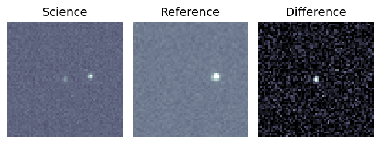
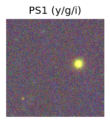
LegacySurvey: 1 sources in 3 arcsec Closest: d = 0.14 arcsec, 256.1 deg (east of north) photoz=0.62 (68% bounds 0.29, 1.22), type=REX peak abs mag = -23.14 (68% bounds -21.23, -24.94) 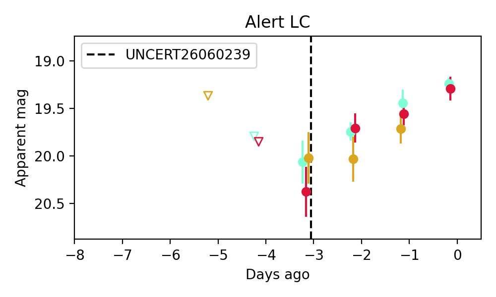
Consistent with synchrotron, g-r>0!
13. ZTF26aazksbp (Afterglow?) [Back to Top] [Share] [Trigger Swift] [Fritz ] [Lasair ]RA, Dec: 208.73578, 9.23547 13h54m56.59s, 9d14m7.71sGalactic (l, b): 345.8814, 66.65337 ext(g-r) = 0.03peak abs mag = -24.78 LegacySurvey: 1 sources in 3 arcsec Closest: d = 5.47 arcsec, 312.2 deg (east of north) photoz=0.43 (68% bounds 0.25, 0.66), type=REX peak abs mag = -23.35 (68% bounds -21.94, -24.48)
14. ZTF26aazleie (Afterglow?) [Back to Top] [Share] [Trigger Swift] [Fritz ] [Lasair ]RA, Dec: 235.60928, 2.88979 15h42m26.23s, 2d53m23.26sGalactic (l, b): 9.80462, 42.50836 ext(g-r) = 0.075peak abs mag = -24.03
15. ZTF26aazloju (FBOT?) [Back to Top] [Share] [Trigger Swift] [Fritz ] [Lasair ]RA, Dec: 232.52448, 1.57693 15h30m5.87s, 1d34m36.94sGalactic (l, b): 5.84066, 44.21817 ext(g-r) = 0.05LegacySurvey: 1 sources in 3 arcsec Closest: d = 1.19 arcsec, 355.8 deg (east of north) photoz=1.09 (68% bounds 0.91, 1.35), type=REX peak abs mag = -24.86 (68% bounds -24.36, -25.42)
16. ZTF26aazlvwb (FBOT?) [Back to Top] [Share] [Trigger Swift] [Fritz ] [Lasair ]RA, Dec: 252.98184, 43.81952 16h51m55.64s, 43d49m10.27sGalactic (l, b): 68.79864, 39.46479 ext(g-r) = 0.016peak abs mag = -21.17 PS1: 1 source in 3 arcsec Closest: d = 2.26 arcsec photoz=0.53+/-0.16 peak abs mag = -22.91 Consistent with synchrotron, g-r>0!
17. ZTF26aazmcru (FBOT?) [Back to Top] [Share] [Trigger Swift] [Fritz ] [Lasair ]RA, Dec: 239.3123, -14.85836 15h57m14.95s, -14d-51m-30.10sGalactic (l, b): 355.72655, 28.40677 ext(g-r) = 0.203LegacySurvey: 1 sources in 3 arcsec Closest: d = 0.54 arcsec, 58.0 deg (east of north) photoz=0.97 (68% bounds 0.84, 1.08), type=PSF peak abs mag = -25.17 (68% bounds -24.78, -25.46)
18. ZTF26aazmdeq (FBOT?) [Back to Top] [Share] [Trigger Swift] [Fritz ] [Lasair ]RA, Dec: 236.65115, -11.02095 15h46m36.27s, -11d-1m-15.42sGalactic (l, b): 356.94842, 32.91742 ext(g-r) = 0.248LegacySurvey: 1 sources in 3 arcsec Closest: d = 3.34 arcsec, 109.4 deg (east of north) photoz=0.09 (68% bounds 0.02, 0.65), type=PSF peak abs mag = -19.69 (68% bounds -16.3, -24.68)
19. ZTF26aazmiup (FBOT?) [Back to Top] [Share] [Trigger Swift] [Fritz ] [Lasair ]RA, Dec: 276.76283, -13.30035 18h27m3.08s, -13d-18m-1.25sGalactic (l, b): 18.34213, -0.74 ext(g-r) = 10.913PS1: 1 source in 3 arcsec Closest: d = 2.40 arcsec photoz=0.06+/-0.01 peak abs mag = -46.61